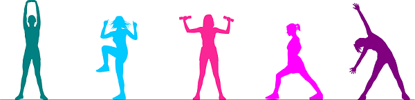

INSTALACIONES
El CDU cuenta con los siguientes escenarios:
- Cancha de fútbol con medidas reglamentarias (dispone de una tribuna).
- Pista atlética con medidas reglamentarias (dispone de tribuna).
- Cancha descubierta de voleibol con medidas reglamentarias (dispone de tribuna).
- Cancha polifuncional descubierta para baloncesto, fútbol de salón y voleibol (dispone de tribuna).
- Coliseo Cubierto Universitario en donde se pueden practicar las disciplinas de baloncesto, fútbol de salón, fútbol
sala, voleibol, además de servir como espacio para actividades culturales (dispone de 3 tribunas).
- Patinódromo con medidas reglamentarias.
- Dojos cubiertos de karate do, aiki do y taekwondo con medidas reglamentarias.
- Piscinas olímpicas de clavados y natación con medidas reglamentarias para la práctica de disciplinas como clavados,
natación clásica, natación con aletas, polo acuático y rugby subacuático.
- Sala de ajedrez.
- Salón de aeróbicos y baile deportivo.